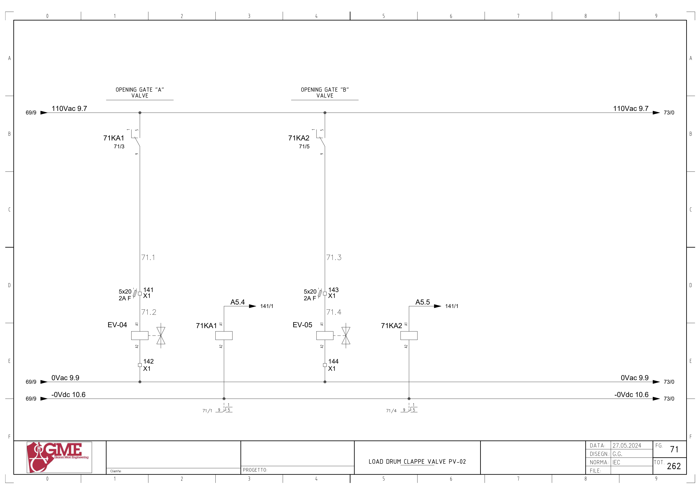
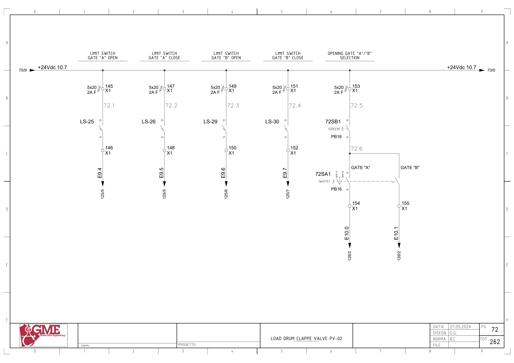
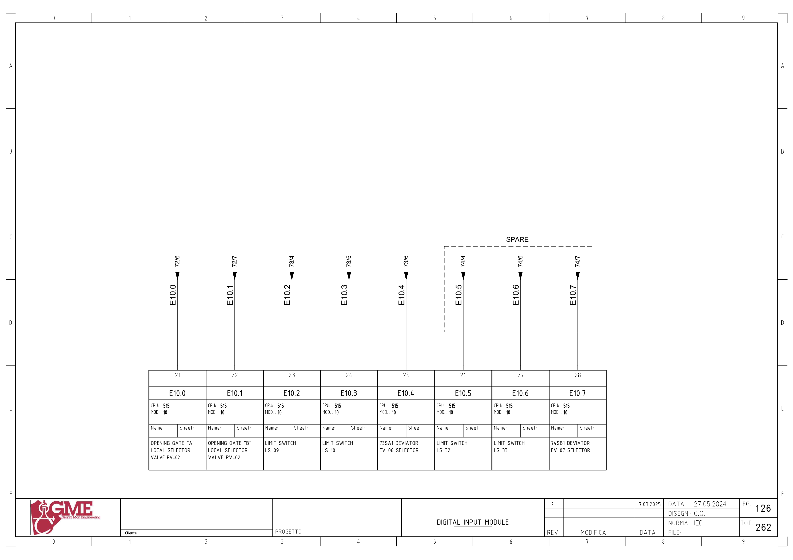

PV02 · 드럼 배출 이중 게이트 전기 회로 추적
1. 도면의 구성과 진단 경계
FG71의 EV04/EV05는71KA1/2 릴레이를 거친110Vac 구동입니다. FG72의 LS25/26/29/30과 PB16 현장 선택기는24Vdc 입력입니다.
PV02 운전 허가·MC04 응답과 출력 밸브·실제 위치는 별도입니다. 시공도면 ROT1TB1의 EV03/04/05 공유 간선에서 EV03은 RD01 윤활 밸브로 분리합니다.
추가 시공도면 · 접속함·케이블·배관 경로 — 승인·현재 설치는 확인 전입니다.
2. 게이트 A 밸브 명령
A5.4 ↔ 백업 %Q5.4 / pv-02 gate a ev · FG71 · PDF 72
- FG141: MOD.15 단자15 / A5.4
- 71KA1 코일A1→A2 / -0Vdc10.6
- 110Vac9.7 → 71KA1 접점1→9
- X1:141 / 2A F(5×20) → EV-04 코일A1
- EV-04 A2 → X1:142 → 0Vac9.9
전달·사용 위치: 원본 네트워크 1920는 현장 선택·자동 요청·maintenance의 출력 경로를 포함합니다. 명령은 열림 밸브 구동이며 닫힘 센서와 다른 신호입니다.
원본 심볼 직접 참조: 1091 / simulation / ORef 30 · 1091 / simulation / ORef 32 · 1817 / allarms 1 / ORef 1612 · 1817 / allarms 1 / ORef 1621 · 1920 / r1 scraps gate 2 / ORef 733 · 1923 / r1 scraps gate 2 / ORef 37 · 1923 / r1 scraps gate 2 / ORef 41 · 1923 / r1 scraps gate 2 / ORef 43 · 1923 / r1 scraps gate 2 / ORef 47
3. 게이트 B 밸브 명령
A5.5 ↔ 백업 %Q5.5 / pv-02 gate b ev · FG71 · PDF 72
- FG141: MOD.15 단자16 / A5.5
- 71KA2 코일A1→A2 / -0Vdc10.6
- 110Vac9.7 → 71KA2 접점1→9
- X1:143 / 2A F(5×20) → EV-05 코일A1
- EV-05 A2 → X1:144 → 0Vac9.9
전달·사용 위치: 원본 네트워크 1920는 현장 선택·자동 요청·maintenance의 출력 경로를 포함합니다. 명령은 열림 밸브 구동이며 닫힘 센서와 다른 신호입니다.
원본 심볼 직접 참조: 1091 / simulation / ORef 34 · 1091 / simulation / ORef 36 · 1818 / allarms 1 / ORef 30 · 1818 / allarms 1 / ORef 32 · 1920 / r1 scraps gate 2 / ORef 729 · 1924 / r1 scraps gate 2 / ORef 83 · 1924 / r1 scraps gate 2 / ORef 86 · 1924 / r1 scraps gate 2 / ORef 88 · 1924 / r1 scraps gate 2 / ORef 91
4. 게이트 A 열림 위치
E9.4 ↔ 백업 %I9.4 / ev04_open · FG72 · PDF 73
- +24Vdc10.7 → X1:145 / 2A F(5×20)
- LS-25 접점13→14
- X1:146 → E9.4
- FG125: MOD.10 단자15
전달·사용 위치: 원본 네트워크 1923는 물리 입력·내부 Inputs와 출력 상태를 이용한 MEM_OPEN/MEM_CLOSE의 Set·Reset을 포함합니다. 물리·Inputs 두 가지를 기억 Set 조건에서 확인합니다.
원본 심볼 직접 참조: 1923 / r1 scraps gate 2 / ORef 38
5. 게이트 A 닫힘 위치
E9.5 ↔ 백업 %I9.5 / ev04_close · FG72 · PDF 73
- +24Vdc10.7 → X1:147 / 2A F(5×20)
- LS-26 접점13→14
- X1:148 → E9.5
- FG125: MOD.10 단자16
전달·사용 위치: 원본 네트워크 1923는 물리 입력·내부 Inputs와 출력 상태를 이용한 MEM_OPEN/MEM_CLOSE의 Set·Reset을 포함합니다. 실제 닫힘과 명령 해제를 구분합니다.
원본 심볼 직접 참조: 1923 / r1 scraps gate 2 / ORef 44
6. 게이트 B 열림 위치
E9.6 ↔ 백업 %I9.6 / ev05_open · FG72 · PDF 73
- +24Vdc10.7 → X1:149 / 2A F(5×20)
- LS-29 접점13→14
- X1:150 → E9.6
- FG125: MOD.10 단자17
전달·사용 위치: 원본 네트워크 1924는 물리 입력·내부 Inputs와 출력 상태를 이용한 MEM_OPEN/MEM_CLOSE의 Set·Reset을 포함합니다. 다음 단계 전환과 B 열림 기억을 함께 기록합니다.
원본 심볼 직접 참조: 1924 / r1 scraps gate 2 / ORef 38
7. 게이트 B 닫힘 위치
E9.7 ↔ 백업 %I9.7 / ev05_close · FG72 · PDF 73
- +24Vdc10.7 → X1:151 / 2A F(5×20)
- LS-30 접점13→14
- X1:152 → E9.7
- FG125: MOD.10 단자18
전달·사용 위치: 원본 네트워크 1924는 물리 입력·내부 Inputs와 출력 상태를 이용한 MEM_OPEN/MEM_CLOSE의 Set·Reset을 포함합니다. 실제 닫힘과 명령 해제를 구분합니다.
원본 심볼 직접 참조: 1924 / r1 scraps gate 2 / ORef 44
8. 현장 게이트 A 선택
E10.0 ↔ 백업 %I10.0 / selector op gate a pv-02 · FG72 · PDF 73
- +24Vdc10.7 → X1:153 / 2A F(5×20)
- 72SB1 PB 접점13→14 → 72SA1 게이트A 선택 접점
- X1:154 → E10.0
- FG126: MOD.10 단자21
전달·사용 위치: 원본 네트워크 1919는 해당 선택 입력을 Open EV A 00 요청으로 전달합니다. 최종 밸브 명령은 별도 네트워크입니다.
원본 심볼 직접 참조: 1919 / r1 scraps gate 2 / ORef 692
9. 현장 게이트 B 선택
E10.1 ↔ 백업 %I10.1 / selector op gate b pv-02 · FG72 · PDF 73
- +24Vdc10.7 → X1:153 / 2A F(5×20)
- 72SB1 PB 접점13→14 → 72SA1 게이트B 선택 접점
- X1:155 → E10.1
- FG126: MOD.10 단자22
전달·사용 위치: 원본 네트워크 1919는 해당 선택 입력을 Open EV B 00 요청으로 전달합니다. 최종 밸브 명령은 별도 네트워크입니다.
원본 심볼 직접 참조: 1919 / r1 scraps gate 2 / ORef 694
위 직접 참조는 복원 원본의 같은 심볼명 위치입니다. 읽기·쓰기 역할, 현재 호출, 현장 사용을 함께 확정한 표는 아닙니다. 원본의 simulation 블록 참조가 있더라도 이번 작업에서 가상 실행·개발·시험은 진행하지 않았습니다.
원본 PLC와 연결
남은 확인과 기록
- 시공도면 LS25–32와 OEM 네 위치 센서, 단자·목록 순번 C06 확인
- MC04 피드백·유지보수 신호와 게이트 운전 허가의 전체 전달 확인
- A/B 게이트 위치·공압·실린더·기억·원시 입력을 시각순으로 대조
- 전원 재시작의 닫힘 기억 초기화와 실제 위치를 별도로 확인
도면을 함께 확인
FG 71 · 해당 도면 보기

FG 72 · 해당 도면 보기

FG 125 · 해당 도면 보기

FG 126 · 해당 도면 보기

FG 141 · 해당 도면 보기

| 기록 항목 | 내용 |
|---|---|
| 현장 식별 | 설비 ID / 반·단자대 / 모터·인버터 명판 / 도면 개정 |
| 신호 구간 | PLC 명령 / 단자 / 직렬 접점 / 릴레이 / DI / 응답 접점 / 입력 / 내부 DB |
| 관찰 결과 | 시각 / 운전 모드 / 기준값의 근거 / 관찰값 / 최초 불일치 구간 |
| 복구 확인 | 원인·조치 / 원인 해제 / Reset / 재요청 / 주변 설비 영향 |